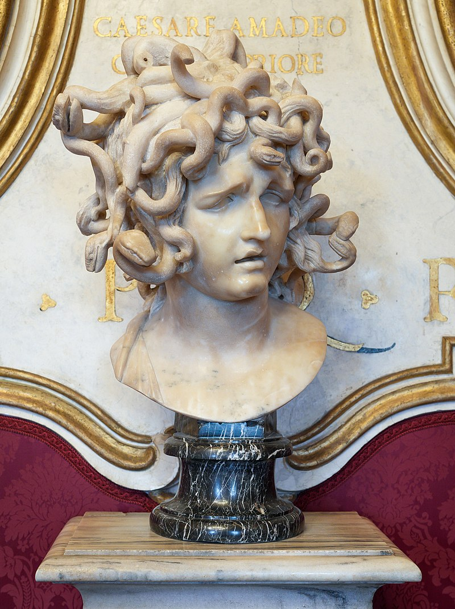
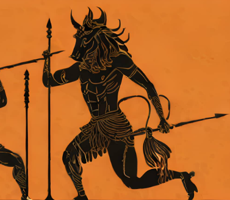
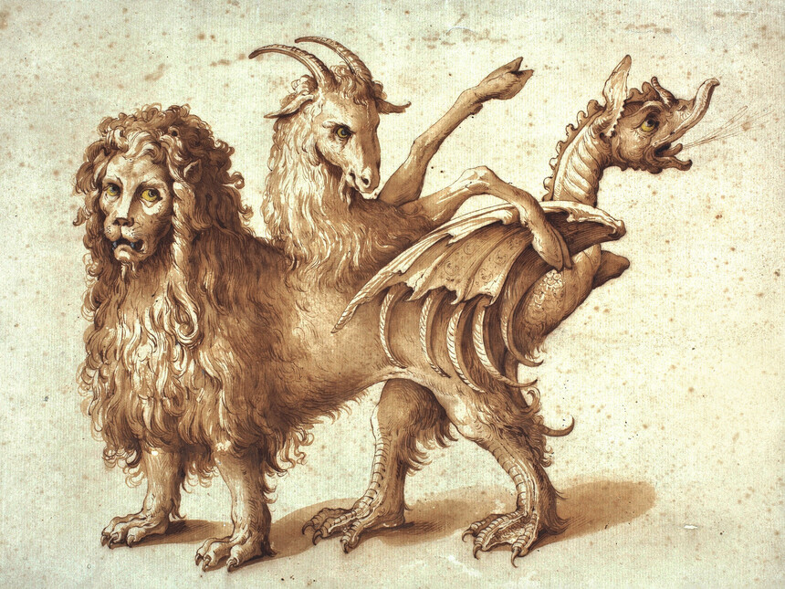
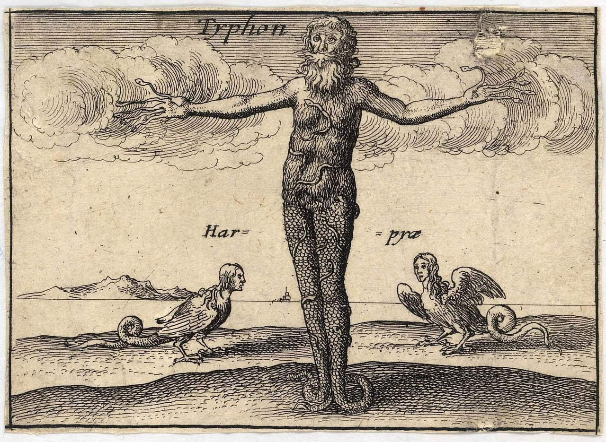
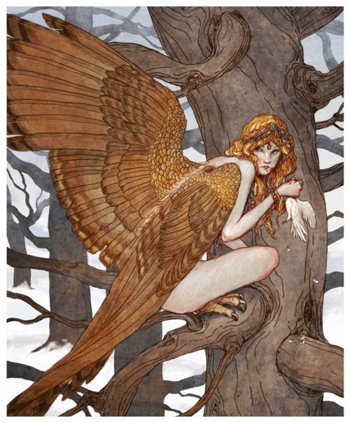
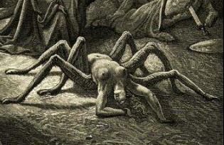

Criaturas de la mitología
Cerbero
El sabueso de Hades, a veces se muestra con dos cabezas y varias partes del cuerpo, pero la forma más familiar es el Cerbero de tres cabezas. Mientras que se dice que Cerbero, uno de los hijos de Echidna, es lo suficientemente feroz como para que los dioses le teman, y come carne, es un perro guardián en la tierra de los ya muertos.
Uno de los trabajos de Hércules fue buscar a Cerbero. A diferencia de los monstruos devastadores del campo que Hércules destruyó, Cerbero no estaba dañando a nadie, por lo que Hércules no tenía ninguna razón para matarlo.
Cada cabeza tenía un nombre distinto:
• Veltesta, la cabeza de la izquierda.
• Tretesta, la Del medio.
• Drittesta, la de la derecha.
Medusa
Medusa, al menos en algunos relatos, fue una vez una mujer hermosa que sin saberlo atrajo la atención del dios del mar Poseidón. Cuando el dios decidió aparearse con ella, estaban en el templo de Atenea. Y ésta estaba furiosa. Como siempre, culpando a la mujer mortal, se vengó convirtiendo a Medusa en un monstruo tan horrible que una sola mirada a su rostro convertiría a un hombre en piedra.
Incluso después de que Perseo, con la ayuda de Atenea, separara a Medusa de su cabeza, ésta mantuvo su poder letal.
La cabeza de Medusa a menudo se describe como cubierta de serpientes en lugar de cabello. Medusa también se cuenta como una de las Gorgonas, tres hijas de Phorcus.
• Sus hermanas son las Gorgonas inmortales: Euryale y Stheno.
Minotauro

El minotauro era una terrible bestia devoradora de hombres, mitad hombre y mitad toro. Nació de Pasiphae, la esposa del rey Minos de Creta. Para evitar que el minotauro se comiera a su propia gente, Minos hizo encerrar al minotauro en un complejo laberinto diseñado por Dédalo, quien también había construido el artilugio que había permitido que Pasifae fuera preñada por el toro blanco de Poseidón. Para mantener alimentado al minotauro, Minos ordenó a los atenienses que enviaran más de 7 hombres y 7 mujeres jóvenes cada año. Cuando Teseo escuchó los lamentos de las familias el día en que los jóvenes serían enviados como alimento, se ofreció como voluntario para reemplazar a uno de los jóvenes. Luego fue a Creta donde, con la ayuda de una de las hijas del rey, Ariadne, pudo resolver el laberinto y matar al minotauro.
León de Nemea

El León de Nemea fue uno de los muchos descendientes de Equidna mitad mujer y mitad serpiente y su esposo, el Tifón de 100 cabezas. Vivía en Argolis aterrorizando a la gente. La piel del león era impenetrable, por lo que cuando Hércules intentó dispararle desde la distancia, no pudo matarlo. No fue hasta que Hércules usó su garrote de madera de olivo para aturdir a la bestia, que pudo estrangularla hasta la muerte. Hércules decidió usar la piel del León de Nemea como protección, pero no pudo desollar al animal hasta que tomó una de las garras del propio León de Nemea para rasgar la piel.
Centauro

El centauro es otro de los animales mitológicos griegos más conocidos, el cual ha sido bien representado a través del tiempo no solo a nivel cultural sino también en películas y diversos cuentos. Esta figura es la unión de un hombre o mujer (centáuride) con un caballo. Así, posee el cuerpo de un caballo y el tronco, brazos y cabeza de una persona. Eran guerreros libres y muy toscos.
Hay diversas expresiones sobre su origen. Así, algunos grupos antiguos tenían como símbolo sagrado a los caballos, es por ello que pudieron utilizarlos para la creación de esta criatura. Por otro lado, el mito pudo surgir cuando se vio por primera vez a un hombre cabalgando sobre un caballo, que se pudo pensar que era un animal híbrido. En cualquier caso, si nos centramos en personajes de la mitología griega, Quirón fue un centauro muy famoso.
Quimera
El centauro es otro de los animales mitológicos griegos más conocidos, el cual ha sido bien representado a través del tiempo no solo a nivel cultural sino también en películas y diversos cuentos. Esta figura es la unión de un hombre o mujer (centáuride) con un caballo. Así, posee el cuerpo de un caballo y el tronco, brazos y cabeza de una persona. Eran guerreros libres y muy toscos. Hay diversas expresiones sobre su origen. Así, algunos grupos antiguos tenían como símbolo sagrado a los caballos, es por ello que pudieron utilizarlos para la creación de esta criatura. Por otro lado, el mito pudo surgir cuando se vio por primera vez a un hombre cabalgando sobre un caballo, que se pudo pensar que era un animal híbrido. En cualquier caso, si nos centramos en personajes de la mitología griega, Quirón fue un centauro muy famoso.
Sirena

Estos seres han estado presenten en multitud de mitologías, historias y leyendas de todo el mundo. Las sirenas de la mitología griega no son como las vemos ahora representadas ni tampoco como las de la mitología nórdica. Estas criaturas vinculadas con el mundo de los muertos se personificaban con cuerpo de ave y cabeza de mujer. Emitían cantos que atraían a los navegantes, ya que vivían en las costas.
Tifón
Tifón nació de Gaia (la tierra) y Tartarus (las profundidades del infierno). Se decía que había sido la criatura más feroz que jamás vagó sobre la tierra. Era enorme. Se decía que cuando estaba de pie, su cabeza rozaba las estrellas. La mitad inferior de su cuerpo consistía en dos colas de víbora enrolladas que silbaban constantemente. Y, en lugar de dedos, varias cabezas de dragón surgían de sus manos. Sus alas extendidas, podían tapar el sol y brotaba fuego de sus ojos. Tifón era una criatura tan poderosa que el único oponente concebible para desafiarlo era el mismo Zeus. La guerra entre Tifón y Zeus fue tan poderosa que amenazó con romper el planeta en dos. Finalmente, Zeus triunfaría sobre este y fue arrojado a los pozos del Tártaro, donde fue sellado para siempre.
Licaón

El primer hombre lobo reconocido, según la leyenda, es Licaón, rey de Arcadia (Grecia). Podría considerarse como el ancestro de los hombres lobo. Era un rey arcadio muy querido por su pueblo pero un fanático religioso que solo pensaba en adorar a los dioses. Su fanatismo llegó a tal punto que acabó convirtiéndose en un rey cruel. No dudó en sacrificar personas inocentes y ofrecerlas a los seres divinos. Esto lo hizo muy impopular e hizo enfurecer también a Zeus. A pesar de las advertencias, no se detuvo con los sacrificios y, como resultado, Zeus lo convirtió en lobo y fue desterrado de las tierras arcadias para siempre.
Arpía
Estas criaturas con cuerpo de pájaro y rostro de mujer y una apariencia general hermosa, robaban comida a las víctimas y llevaban a los malhechores a las Erinnyes, tres diosas que buscaban venganza contra cualquiera que hubiera hecho un juramento falso o cometido un acto malvado (sus equivalentes romanos eran las Furias o Dirae). Zeus a menudo las usaba como medio de castigo o tortura. Su nombre significa literalmente, "la que arrebata".
Ciclope

Los cíclopes eran gigantes primordiales que se decía habían nacido de Gaia, la tierra. Poseían una gran fuerza y ferocidad y contaban con un único ojo abultado que sobresalía de su frente. Temiendo su poder, los cíclopes fueron arrojados a los pozos del Tártaro por su padre Urano. Los monstruos permanecieron encarcelados cuando el titán Cronos derrocó a Urano y tomó su lugar como gobernante del universo. Únicamente cuando los olímpicos llegaron al poder, los cíclopes encontraron la libertad. Zeus liberó a los monstruos, donde la historia más famosa relacionada con un cíclope se topa con Ulises y sus viajes. En el libro 9 de La Odisea, Odiseo y su tripulación se encuentran atrapados en la cueva del poderoso cíclope Polifemo. El monstruo bloquea su escape y devora la carne de sus cautivos día tras día. Odiseo, conocido por su astucia, diseña un plan para escapar.
Aracne
Hija de un pastor y una tejedora talentosa que desafió a Atenea, la diosa de la sabiduría, a un concurso de tejido, existen varias versiones de la historia con diferentes relatos de quién ganó dicha competición, pero ninguna de ellas termina bien para Aracne. En la versión del mito de Ovidio (43 a. C.), Aracne, derrota a Atenea. Sin embargo, su tejido que representa cómo los dioses engañan y abusan de los mortales enfurece a Atenea y, por insultar a los dioses y compararse con ellos, la diosa convierte a la niña en una araña.